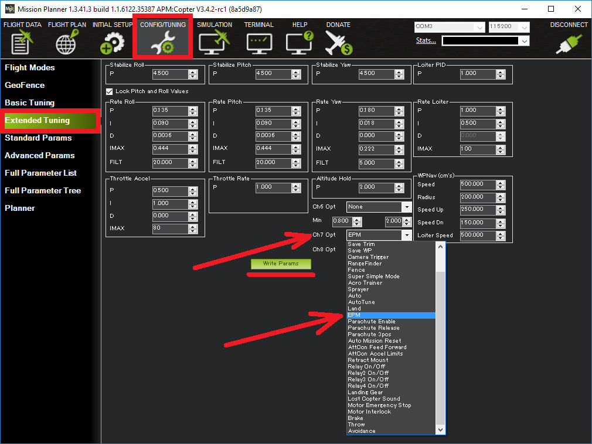
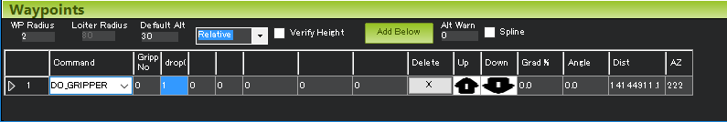

Servo Gripper¶
This article explains how to connect a servo to an autopilot and configure it for use as a gripper which is useful for delivery or bottle drop applications. The servo can be controlled directly by the pilot via a switch on the transmitter or as part of a mission. You may wish to refer to the general servo wiki page for other ways servos can be controlled.
Connecting the servo to an autopilot¶

If using Copter, connect the servo to AUX OUT 1, 2, 3 or 4 if the autopilot includes an IOMCU for the first 8 MAIN outputs, or any output operating at 50Hz if the autopilot does not use an IOMCU. MAIN OUT 1 ~ 8 should be avoided because these normally update at 400hz. If using Plane or Rover where all PWM output pins usually update at 50hz, any unused output may be used.
In autopilots with IOMCUs, AUX OUT 5 and 6 cannot be used by default because they are setup as Relays. These pins can changed to Servo outputs by setting the
BRD_PWM_COUNTparameter to 6 and setting RELAY_PIN and RELAY_PIN2 to -1.If the autopilot cannot provide power to the servos, an external BEC or ESC that can provide 5V should be used.
配置¶
set which RC output is used by setting SERVOx_FUNCTION (or RCX_FUNCTION) to 28 (i.e. if using AUX OUT 1 on a Pixhawk, set SERVO9_FUNCTION to 28).
GRIP_ENABLE to 1 to enable the gripper feature and then refetch parameters from the ground station in order to make other gripper parameters visible.
GRIP_TYPE to 1 to enable the servo gripper and reboot the autopilot
GRIP_GRAB to the pwm value (i.e. 1000 ~ 2000) for the gripper’s closed position
GRIP_RELEASE to the pwm value for the gripper’s open position
GRIP_NEUTRAL to the pwm value for the gripper’s neutral position (often the same as its closed position)
Controlling Gripper from the transmitter¶
The transmitter’s auxiliary switch can control the gripper.
If using a firmware version prior to 4.0. CH7_OPT or CH8_OPT can be used to control the gripper by setting it to 19. If using the mission planner, select Config/Tuning > Extended Tuning and set the Ch7 Opt or Ch8 Opt drop-down to “EPM” or “Gripper”.
In firmware versions 4.0 later, use an RC channel for control by setting is
RCx_OPTIONparameter to 19.
Controlling Gripper during a mission¶
The gripper position can be controlled during a mission in AUTO mode using the DO_GRIPPER command. Set the “drop/grab” column to 0 to close the gripper, 1 to open the gripper.
{kind=link}
Controlling Gripper from the ground station¶
The gripper can be opened or closed in real-time from the ground station if the ground station sends a COMMAND_LONG with the command field set to DO_GRIPPER (i.e. 211) but there are no ground stations (as far as we know) that support doing this.